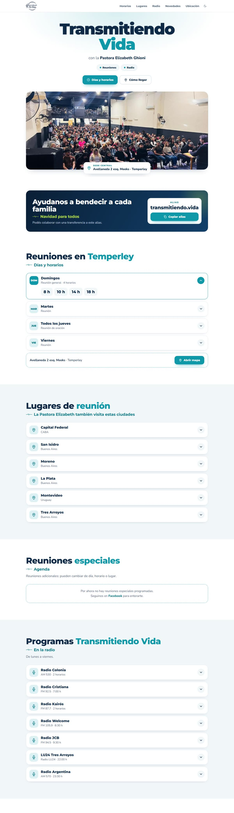
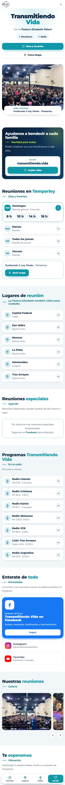

La iglesia de la Pastora Elizabeth Ghioni tiene reuniones en varias ciudades y programas en siete radios. Necesitaba un lugar claro donde encontrar todo. Le armamos una web que se actualiza sola desde una planilla, y seguimos administrándola.

Las reuniones se cargan en una planilla de Google: una fila por fecha. Las pasadas desaparecen solas y cada ciudad muestra las próximas tres.
Reuniones en Temperley y otras sedes, siete radios con sus horarios, novedades de Facebook, Instagram y YouTube, galería y mapa.
Una columna con desplegables, barra fija, letra grande y modo oscuro, para que todos la puedan leer.
Cargamos las fechas y hacemos las imágenes para Facebook.
